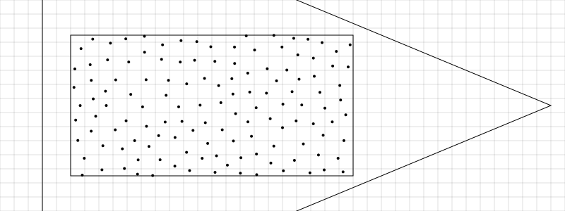
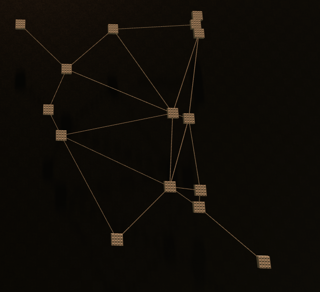
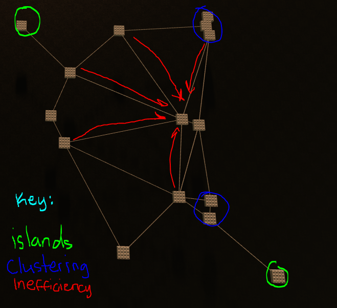
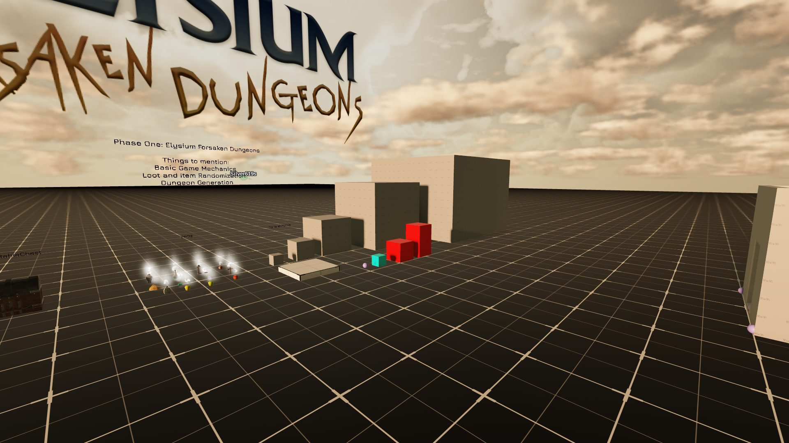
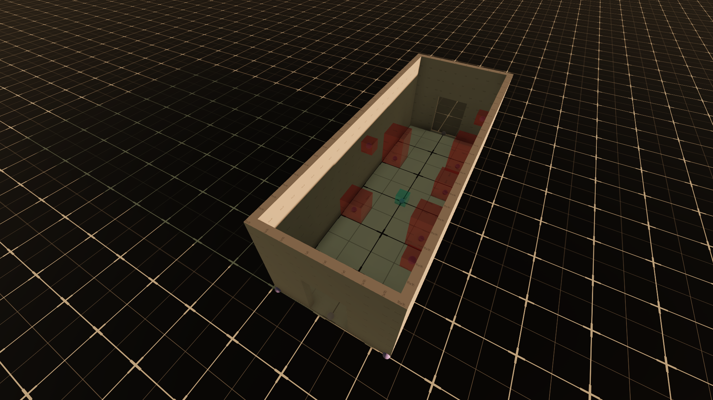
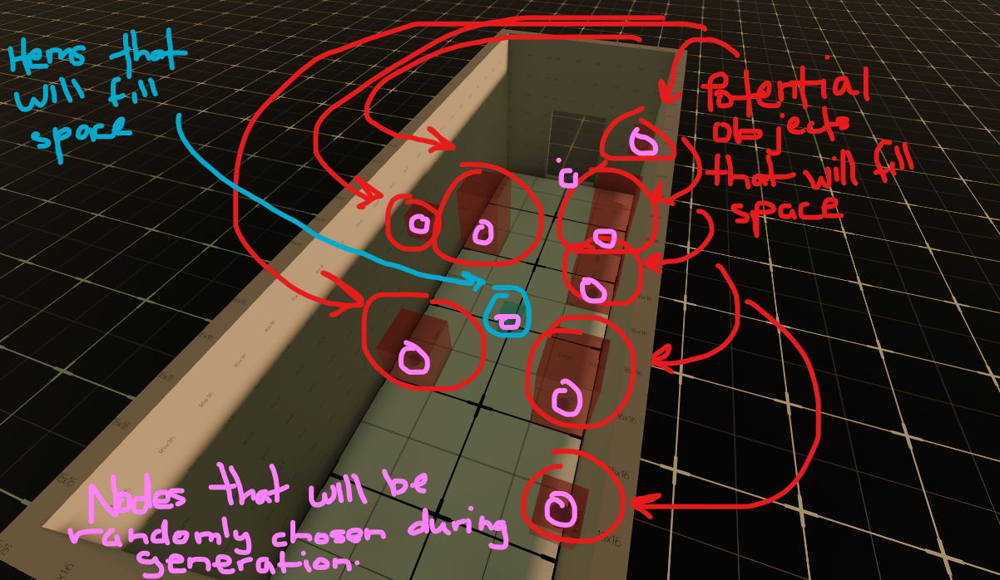
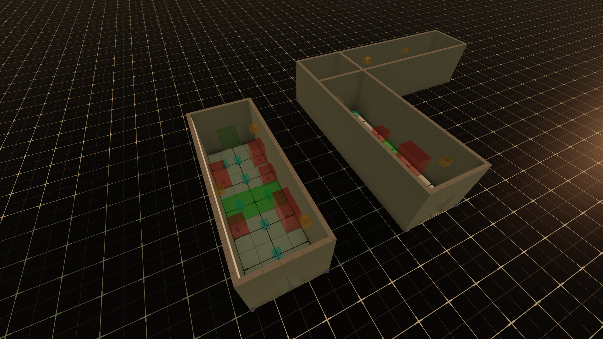
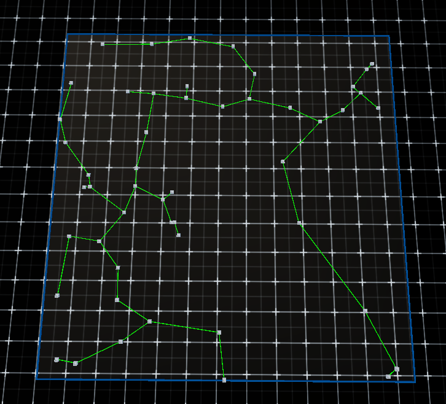
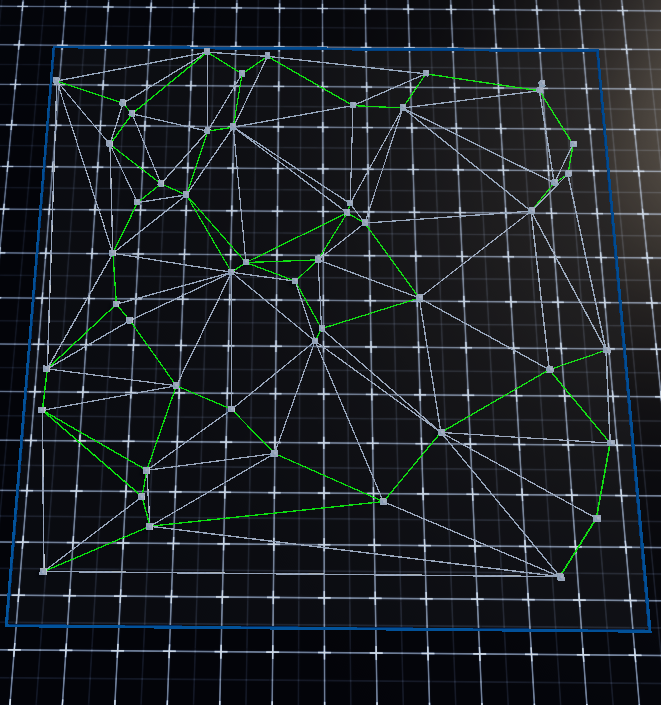

Inventory Server: The handling of player items and statistics.
Primarily handles player(s) items by grabbing items out of replicatedStorage using the following dependencie(s): "InventoryServer" , then sends player information back to the player.
Lucidchart and design for InventoryServer is below.
View the script: InventoryServerScript.lua
ProximityPromptScript: The debugging of players on gathering item information.
Checks if the player has activated a proximity prompt (Billboard GUI of item) while also confirming item ID.
View the script: PromximityPromptScript.lua
Security System: A inventory security system.
Effectively iterates through player inventory and chests that contain items so make sure an exisiting tag is present, and if not, the system outputs "Invalid tag". Also sets in place settings that puts a maximum value on data inside of a given stack at a time; provides the IDs for the following objects: Armor, Weapon, Consumable, Cards, and Moves. Creates a stack and intializes it at -1 to ensure there is no overflow of data when checkOverFlow function is ran. Handles the creation of stacks for the inventory system alongside the math needed for processing item information.
View the script: SecurityCheck.server.lua
LootRandomizer: Randomizes loot for the player
Creates a random number through a table (1-10), intializes the local counter at 0 to ensure no overflow of data; takes the rarity for any given item and applies an local weight to said item, the higher the weight, the less likely the player will pull that item. Each chest has its own lootTable which is a table that holds all the possible items a player can get out of a particular chest. The Loot Randomizer will select a number between 1-3 which dictates the amount of items you can recieve in a given chest.
View the script: LootRandomizer.lua
customProximityPrompts: Graphical interface for items
Primarily works on front-end graphical interface settings. Sets rarity colors along with grabbing the screenGUI out of the playerGUI (When player spawns in world, storage is created for GUIs). The proximity prompt is loaded in segments such as the frame, bottom frame, middle frame, and top frame; all of which the script iterates through the world explorer to find. Then, UI elements are added by iterating through the orld explorer to find elements such as: rarityType, descriptionType, itemClass, item, and itemQuantity. Various other elements are added in as well such as tweening(animations) alongside distance optimization and clean up functions after the player has disengaged with said item.
View the script: customProximityPrompts.lua
Animations
Using plugins such as Moon Animator 2 alognside the default Roblox Animation Editor, various animations have been added into the game such as opening a chest, and various others.
localHighlighter
A script that handles the highlighting of objects only if interactable and the players line-of-sight matches the object in the workspace.
dungeonGeneration
Updates: 1/18/2025 - Research was conducted on Delaunay Triangulation and Bower-Watson algorithms to help in assistance with the procedurally generated dungeons. It has come to our attention that Delaunay Triangulation would be the best choice for our state of action because of its ability to delete unnecessary plot points in our grid mapping (super traingle)
As shown in the picture above, the super triangle serves as a boundary encompassing all points on the plane. Within this boundary, a **circumcircle** is drawn for each triangle, ensuring that no points lie inside the circumcircle other than the vertices of the triangle itself. This property is critical for Delaunay Triangulation, as it maintains the most equiangular triangle configurations, reducing thin or elongated triangles. By iteratively applying this rule, the algorithm ensures a balanced and efficient triangulation of the points.
This image illustrates Delaunay Triangulation applied to a procedurally generated dungeon, where the blocks represent rooms and the lines denote potential hallways. The triangulation ensures no room lies inside the circumcircle of any triangle, creating an efficient, non-overlapping network of connections that can be optimized for gameplay.
As shown in the image above are the revisions needed for the Delaunay Triangulation System. As of now, we are dealing with clustering isssues, rooms that are too sparced from the rest, and inefficiency when it comes to some of the hallways. Redundant or overly long hallways reduce efficiency and create convoluted paths. We can simplify these connections by removing unnecessary edges, possibly using algorithms like Minimum Spanning Tree (MST) to create a more streamlined layout.
View a YouTube video on Delaunay Triangulation: Delaunay Triangulation
1/19/2025 - Workspace has now been reworked because full attention is needed into the dungeon generation. Since this is Phase 1 of development, design aspects have been pushed back into the foreseeable future in exchange for honing in on the game mechanics.
A design for the dungeon hallway path has been created and visualized.
We are now figuring out ways on how to conceptulize the generation of items,objects,and doors inside the hallways.
 More dungeon hallway variations are being created in a modular design.
View the script (subjected to change): DungeonGenerator.lua
1/25/2025 - We are still working on dungeon generation! Some key points to include would be how Roblox reads matrixes and vectors, as we had to convert these linear algebra concepts into tables for Roblox to understand. As of now, the dungeonGenerator does produce results, however, the results are inadequate enough for us to showcase as of now, but it's a great start.
2/11/2025 - We have sucessfully implemented some of the dungeon generation via Delaunay Triangulation using Prims algorithm which creates MST (Minimum Spanning Tree), which helps with generating pathways for the dungeons to be generated as shown in the picture. The green lights highlighted were the BEST path taken, while, the grey ones were paths deemed unefficient.
 View the script: dungeonGenerator.lua
View the script: priorityQueue.luaView a YouTube video on Minimum Spanning Tree: Minimum Spanning TreepathfindingScript
Updates: 1/27/25 - We have began working on the pathfinding script for some of the AI (Artificial Intelligence)